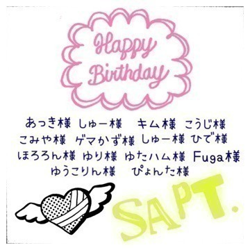

2014/1121Fri二つの車輪
みなさまこんにちわ！
日奈子だよー٩(◦`꒳´◦)۶♪
前回のブログたくさんのコメントありがとうございました！
読んでる途中、何回も泣きそうになったよ。。。
里沙子にも京ちゃんにも、ななつんにも読んでもらうように伝えておくね！
最近は、NOGIBINGOの収録や、
のぎ天の収録、アルバムのレコーディングや撮影などをしていました♪
NOGIBINGO収録前！

ひなみお
この間は、みさ先輩とらんぜと3人である仕事もさせてもらえて、
とても楽しかったです！
情報が解禁されたら話すね♪
それから、この間はのぎ天の収録だったのですが、手の先から足の先まで筋肉痛です。笑
楽しくてはしゃぎました٩(◦`꒳´◦)۶
腹筋も背筋も横腹の少し上の筋も
足の筋も筋肉痛♡笑
そうだ！最近、筋肉痛になること多くて筋肉痛！って皆んなに言うと
筋トレしすぎ！とか、どんなトレーニングしてるの？とか言われるの(￣ー￣)！
怪力キャラって言われたって
怪力になるために筋肉トレーニングとか
鍛えたりなんてしてないんだからねっ！笑
筋トレなんてしなくたって、雑誌も破れるしフライパンも曲げられるもん♪笑
NOGIBINGOで、
おバカ3位とダンスが不得意2位に
選ばれました(｡-∀-｡)！
おバカだということで、イジリーさんに絡んでもらえず、寂しかったです。。。笑
確かに、カメラの前とかだと緊張しちゃって、自分で何を言ってるのかわからなくなってしまうけど、
文字にしたら誤字はあるかもしれないけど、ちゃんと難しいことも言えるもんね(｡-∀-｡)
この間、かりんと話してて
日奈子、そんな言葉知ってるんだねって
驚かれた(´⊙ω⊙`)♪
なんて言ったかは忘れちゃったけどね(´ｰ∀ｰ`)
勉強したいなって最近思います！
数学とか国語とかももちろんだけど、
動物のこととか、自分の興味があることをもっとたくさん知りたいな！
ちょっと前に純奈とカフェにいったの♡
短い時間の間で、色んな話をした！
でも、まだまだ話したり足りないね(｡-_-｡)！焼肉じゃ食べることに集中しちゃうから、今度は塩あいすでカフェ巡りしよ♡
遅くなりましたが、10月お誕生日の方！
ハロウィンぽく作ってみました！
猫ちゃんかわいい♡
お誕生日おめでとうございます！


11月お誕生日の方、このブログ記事に
コメントお願いします！
次の次くらいのブログにアップします！
9月お誕生日の方！何人かの方、載せ忘れてしまいました。。。
すみません。。。
お誕生日おめでとうございます٩(◦`꒳´◦)۶

書きたいことあったのに、忘れちゃった。。。。
土日の間にブログ更新します♪
今日もメールたくさん送ってて755もするからみてねー♡
今日も1日がんばろー！！！！
ぷっくーーーーーーー
今日はMr.Childrenさんが約2年ぶりにMステに出ますね♡♡♡♡
AKBさんも生駒さんも出るので楽しみです♡
この間から琴子と会うたびにミスチルトークをします。♡
お互い好きなLIVE動画を紹介しあって感想を言い合って、共感します♡
とっても楽しいです(｡>ω<｡)
2014/11/21 13:18


コメント(847)
いやいや走れ！bicycle！
大好きだよ*\(^o^)/*
ブログ久しぶりだね(^^)
お待ちしておりました〜笑
最近は色々とお仕事大変そうだけど、握手会や
クリスマスライブが控えてるから体調万全にして
頑張ろうぜ！
富士急行くよ！見つけてな！
バスケットマンなおおです！
ブログ更新ありがとねー
仕事終わったらまたコメント書くねー
ではまたー
日奈子しか向かねえ
( *ˆ﹀ˆ* )
24たのしみにしてる！
れんくんより☆゛
755きいちゃんに何回かコメント返してもらったよー(∩･△･∩)！
755できいちゃんがすごい可愛くなってしまった(*´□`*)
あしゅとの、関係を聞きたいと思います！笑
はよ握手したい
誕生日だからよろしく！
俺11／9誕生日や〜
終わったけどきいちゃんに
お祝いされたいな〜ϵ( 'Θ' )϶
自称いぬ坂11メンバーKiyoです٩(◦`꒳´◦)۶
かわいいから許す（^人^）
関西やからNOGIBINGO!
見られへんねんな…orz
どないかして見ますわ！笑
情報解禁ワクワクやな〜♪
筋肉痛は若いうちは
はやくにきて
すぐどっかいくけど
年取ると2日後とかにきて
大変らしいよ。笑
まいちゅんは何日後に
くるのかな？笑
んなまた(=ﾟωﾟ)ﾉ
byあすと
うん
何プクーって顔してるの
お仕事頑張ってね。
日奈子に会いたい！
きいちゃん可愛い(๑ت๑)♡
こんにちは(^_^)
筋肉痛（笑）
まあ、きなこはちょっとおバカに見える（笑）
２４日の握手会行くから(⌒▽⌒)
じゃあバイバイ（＾Ｏ＾）
がおー(・Д・)ノ
いまね、学校のでしてるの
ケータイでもするね
初コメです(*¨*)
きいちゃんに惚れ始めた者です(o´罒`o)♡
初コメで、あれですが11月誕生日です‼
これからはもっとコメントしていくね*˙︶˙*)ﾉ"
ブログにメールに755とお忙しいと思いますが、
これからも頑張ってください！
755にコメントしてるので返信宜しくお願いしますorz
もう誕生日から1ヶ月が経ちそうだけど笑
つかっちだよ
のぎ天ほんと面白い！！
ひなこの天然ぷりハンパない（笑）
NOGIBINGO3ではおバカ3位に入っちゃったね（笑）
ひなこ本当に面白い（笑）
これから握手の時も笑わせてね！
あっ！あと24日幕張握手会行くから待っとけ！！
じゃあまたね！
つかっち
今月18日僕誕生日でした(^o^)
初コメです（＾_＾）
最近になってきいちゃんが気になり始めました〜
モバメもとってるんだけどかわいいです(^_^)
これから毎回コメントしていきますね〜
それじゃ
ばいばーい（＾Ｏ＾）
俺はyouthful daysだけど～笑
アンダラFINAL行くから、きいちゃん雑誌とフライパン忘れずにね！！！
せつ昨日11月20日誕生日だったよ～
みんなからたくさんお祝いしてもらえた～
きいちゃんにもいわってほしいな～♪
写真いいねー！
走り過ぎて疲れた(￣▽￣)
きいちゃん毎月ファンの人たちの誕生日祝ってて
すごい(°_°)(°_°)
きいちゃんが八福神常連になるのは
近未来だなってなんか思った(^ ^)
頑張ってねん
こんにちー。
今日は暖かいしお散歩日和\(´ω` )/
収録にレコーディングにお疲れ様！
楽しみに待ってるね(´◡͐`)
俺もこの前海沿いをランニングして
久々に筋肉痛になったよ(笑)
NOGIBINGO見たよ！
日奈子がちょっとお○カでも
俺は日奈子の優しい所が好きだから良いんだ。
自分の興味のあることが知りたいってのは
とても素晴らしい事だよ！
少しずつでもやりたい事出来たら良いね(´◡͐`)
純奈ちゃんとカフェとか良いなー。
純奈ちゃん755返してくれるし嬉しい( ´_ゝ`)
10月お誕生日の方おめでとうございます。
素敵な一年を…。
ではではまた更新待ってます！
体調に気をつけてね。
ゆうちくりん
今日はメール一通だけだけど....
個握でミスチルトークすればいいのかな？
オレのミスチルファンの度合いはすごいぞ(*^_^*)
きぃちゃん誕生日お祝いありがとう！
嬉しいです！（≧∇≦）
明後日は富士急ハイランドですね！
みんなで車で富士急向かうので、
楽しみにしてます！
今日のMステも楽しみにしてます！
頑張ってね！(^_^)
では今日はこの辺で！
おつかれさまでした！
前回のブログはコメントし忘れた。。
きょうちゃんとりさこのことはいまでもショックです(｡-_-｡)
nogibingoとか最近きいちゃんが出ててめっちゃテンション上がる(((o(*ﾟ▽ﾟ*)o)))
筋肉痛とか、、、さすが筋肉芸人ですね(￣▽￣)笑
今日のMステはめっちゃ楽しみ。。755とかも待ってます‼︎塩アイスの写真も
こんど個別いくからね
ブログコメントで見てー！
明後日握手会いくよ〜
1枚しかないんだけどね(-｡-;
ブログ更新ありがとう٩(◦`꒳´◦)۶
日奈子情報いっぱいで嬉しいよ(T ^ T)
またコメントするね！充電がヤバいのです
コメントする